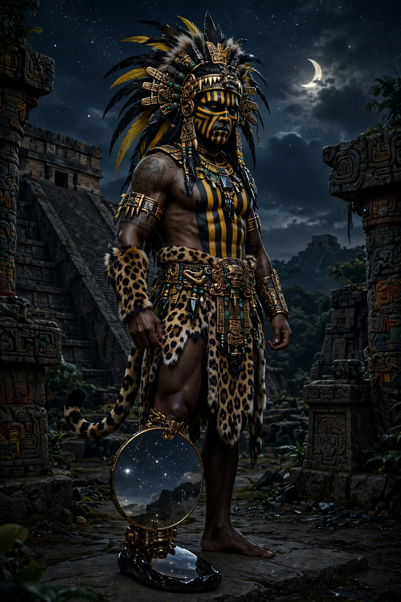

From Wikipedia, the free encyclopedia
| Tezcatlipoca | |
|---|---|
| Affiliation | Aztec (Mexica) mythology; god of night, fate, sorcery, discord and rulership |
| Nahuatl | Tezcatlipoca — 'Smoking Mirror' |
| Symbol | Obsidian mirror; jaguar; a missing foot replaced by a mirror or serpent |
| Brother/rival | Quetzalcoatl |
| Festival | Toxcatl, with the sacrifice of his impersonator (ixiptla) |

Tezcatlipoca (Nahuatl for "Smoking Mirror") is one of the supreme gods of the Aztec (Mexica) world: deity of the night sky, fate, memory, sorcery, discord and kingship — omniscient, capricious, the giver and taker of fortune, whose obsidian mirror sees all human hearts and whose jaguar form prowls the earth after dark. With his brother and eternal rival Quetzalcoatl he created the world; alone, he rules its uncertainty. Mexica kings ruled as his representatives and spoke to him as to a mirror of their own power.
In the myth of the Five Suns, Tezcatlipoca was the first sun, Nahui Ocelotl ("Four Jaguar"), whose era ended when Quetzalcoatl struck him from the sky into the sea — he became a jaguar and devoured that age's giants. The enmity runs through the cycles: in the Toltec cycle of tales it is Tezcatlipoca, the dark sorcerer, who tricks the priest-king Topiltzin Quetzalcoatl into drunken disgrace and exile. Earlier still, the two brothers together tore apart the primordial monster Cipactli to make earth and sky of her body; she bit off Tezcatlipoca's foot as he used it for bait — which is why his images show a mirror, or a serpent, where the foot should be.
His great festival, Toxcatl, centred on the ixiptla: a flawless young captive chosen a year ahead to be the god on earth — taught music, given fine clothes, food and four wives — and then, at the festival's height, to climb the temple steps breaking his flutes one by one and be sacrificed, his heart offered to the god he had embodied. The rite, described by Sahagún's informants, remains the most haunting window into Mexica religion: a year of godhood purchased by a death the whole city mourned and celebrated at once.
Aztec mythology · Mythology · Anansi · Loki (fellow trickster-powers)